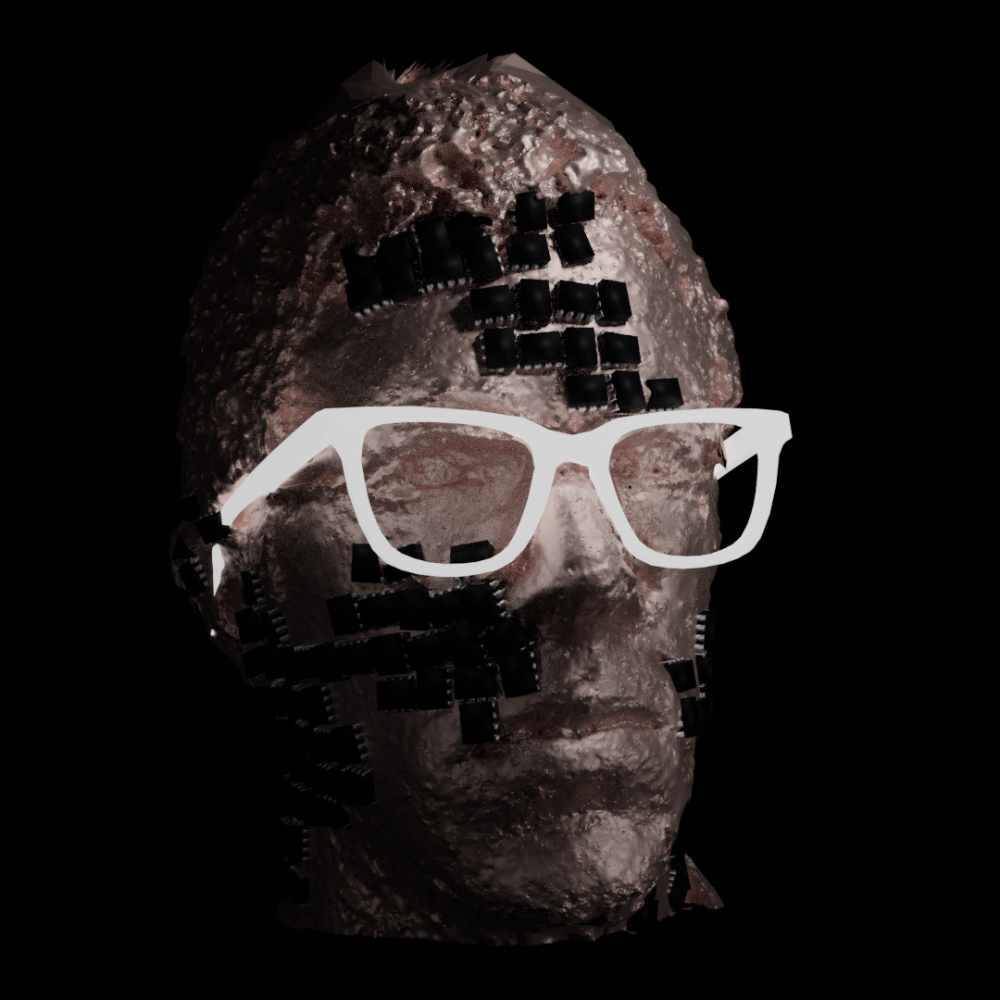

Chipped Flow
I have a bazillion DIP chips because years ago a hackerspace was shutting down and was going to throw out their large collection. I took it off their hands and have been lugging it around ever since.
After coming across it in my studio junk I started thinking about quick projects that I could do with the parts. I thought it might be fun to lay them out using a generative system in Houdini . The exercise turned into an exploration of different packing methods. Also I made a little procedural DIP chip generator asset in Houdini which was fun.
- Convert a baby face to topographical lines
- Generate ribbons wider than the DIP chips along the lines
- Use the UV Layout geo node to pack DIP chips into the ribbons.
Tada:

Same method but with lines generated from a noise function:

An interesting failure along the way (using point relax):

Here was a different approach using a packing method that I learned from this Entagma tutorial video on a 3D model of my head.
